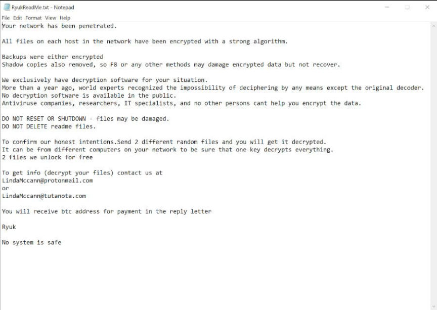
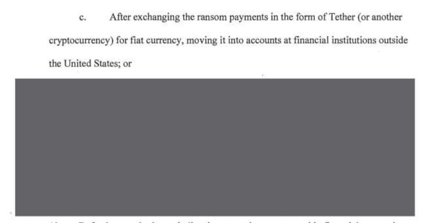
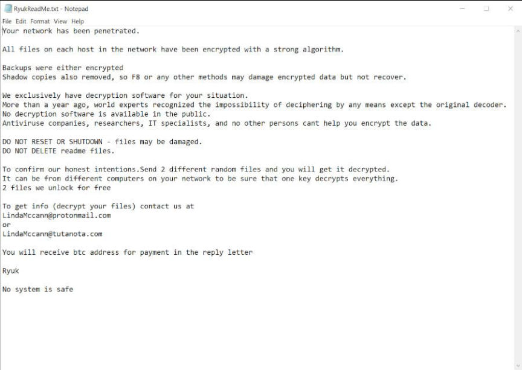
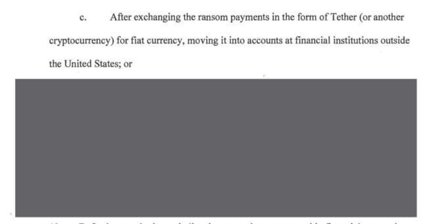

Russian Extradited to the US for Laundering $400K in Crypto
~2 min read | Published on 2022-08-18, tagged Extradited, Money-Laundering, Ransomware using 362 words.
A Russian citizen was extradited from the Netherlands to the United States to face charges for allegedly laundering $400,000 in cryptocurrency.
According to an announcement from the Department of Justice, Denis Mihaqlovic Dubnikov, 29, appeared in court in Portland, Oregon, on August 17 after being extradited from the Netherlands to the United States. Dubnikov faces charges for his alleged role in the laundering of money earned through the use of ransomware. Specifically, the defendant and his co-conspirators laundered payments from victims of the Ryuk ransomware.

“First identified in August 2018, Ryuk is a type of ransomware software that, when executed on a computer or network, encrypts files and attempts to delete any system backups. Of note, Ryuk can target storage drives contained within or physically connected to a computer, including those accessible remotely via a network connection. Ryuk has been used to target thousands of victims worldwide across various sectors. In October 2020, law enforcement officials identified Ryuk as an imminent and increasing cybercrime threat to hospitals and healthcare providers in the United States.”
In July 2019, Dubnikov allegedly laundered over $400,000 in ransomware payments. Collectively, his co-conspirators laundered more than $70 million in ransom proceeds.
Although those involved in the conspiracy used different money laundering methods to avoid detection, funds were often laundered as follows. Victims would pay ransoms in Bitcoin to private wallets controlled by Dubnikov and his co-conspirators. Defendants then split the payments into smaller amounts and moved Bitcoin to numerous private wallets.

Then, the defendants transferred the Bitcoin to an exchange and swapped the Bitcoin for Tether or another cryptocurrency. After turning the Bitcoin into Tether, defendants would send the Tether (or other cryptocurrencies) to different exchanges where they would sell the Tether for fiat currency. They typically traded the Tether for the Chinese Renminbi and moved the fiat to accounts at banks outside of the United States.
In court, Dubnikov pleaded not guilty. A jury trial has been scheduled for October 4, 2022. If convicted, Dubnikov faces up to 20 years in federal prison.
Alleged Russian Money Launderer Extradited from the Netherlands to U.S. | , archive.is, archive.org
Indictment pdf
According to an announcement from the Department of Justice, Denis Mihaqlovic Dubnikov, 29, appeared in court in Portland, Oregon, on August 17 after being extradited from the Netherlands to the United States. Dubnikov faces charges for his alleged role in the laundering of money earned through the use of ransomware. Specifically, the defendant and his co-conspirators laundered payments from victims of the Ryuk ransomware.

Ryuk 'polite' ransom note | Malwarebytes
“First identified in August 2018, Ryuk is a type of ransomware software that, when executed on a computer or network, encrypts files and attempts to delete any system backups. Of note, Ryuk can target storage drives contained within or physically connected to a computer, including those accessible remotely via a network connection. Ryuk has been used to target thousands of victims worldwide across various sectors. In October 2020, law enforcement officials identified Ryuk as an imminent and increasing cybercrime threat to hospitals and healthcare providers in the United States.”
In July 2019, Dubnikov allegedly laundered over $400,000 in ransomware payments. Collectively, his co-conspirators laundered more than $70 million in ransom proceeds.
Although those involved in the conspiracy used different money laundering methods to avoid detection, funds were often laundered as follows. Victims would pay ransoms in Bitcoin to private wallets controlled by Dubnikov and his co-conspirators. Defendants then split the payments into smaller amounts and moved Bitcoin to numerous private wallets.

They also laundered the proceeds in ways we cannot know apparently.
Then, the defendants transferred the Bitcoin to an exchange and swapped the Bitcoin for Tether or another cryptocurrency. After turning the Bitcoin into Tether, defendants would send the Tether (or other cryptocurrencies) to different exchanges where they would sell the Tether for fiat currency. They typically traded the Tether for the Chinese Renminbi and moved the fiat to accounts at banks outside of the United States.
In court, Dubnikov pleaded not guilty. A jury trial has been scheduled for October 4, 2022. If convicted, Dubnikov faces up to 20 years in federal prison.
Alleged Russian Money Launderer Extradited from the Netherlands to U.S. | , archive.is, archive.org
Indictment pdf